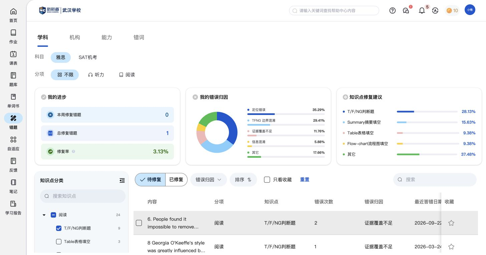
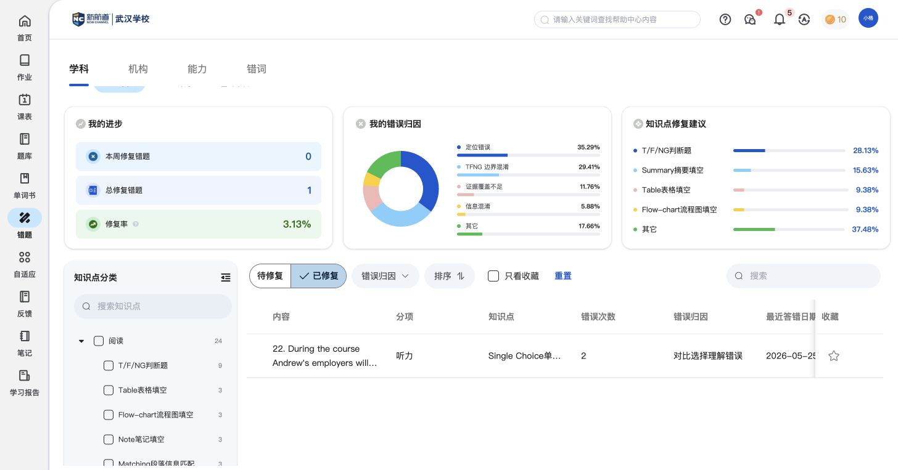
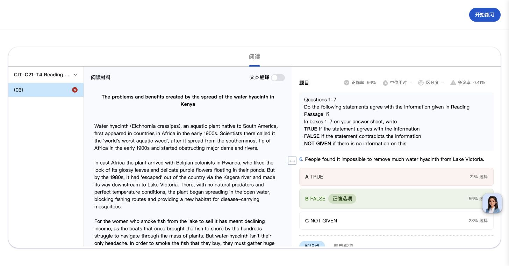
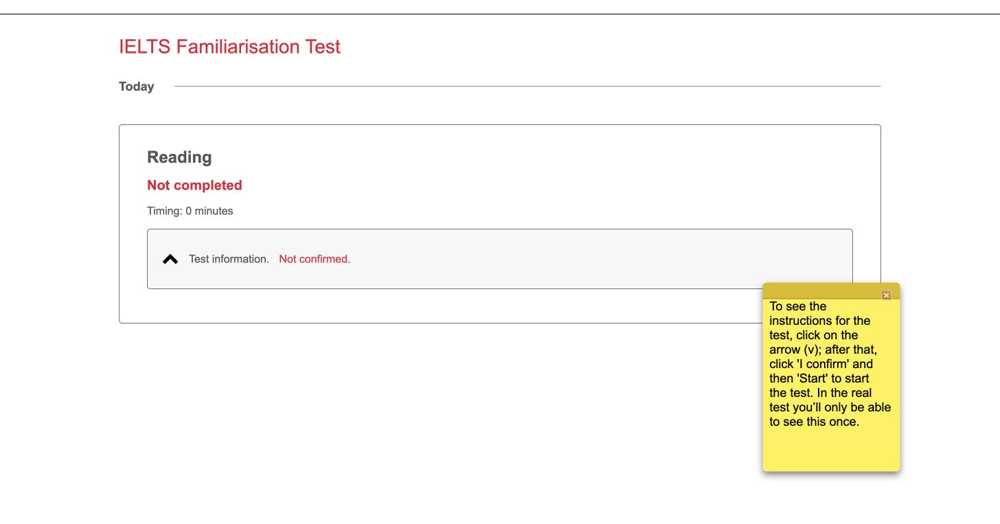
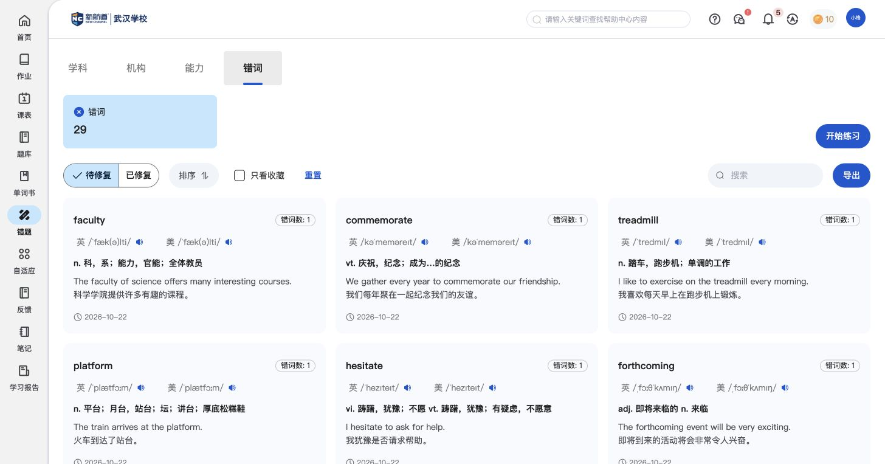

错题：找出常错内容，针对性复习
错题把个人练习中的错误集中起来。学生可以先看常错原因和复习进度，再按知识点找到具体题目、查看原答并重新练习。错词也有入口，完整复习方式引用单词书篇。
功能定位与页面结构
错题
1. 看哪里需要复习学科与分项 → 错误原因、知识点建议、修复进度。
2. 找具体错题知识点分类与错题数量 → 待修复／已修复清单 → 错误次数、原因和日期。
3. 复习或再练错题详情保留原答与错误原因 → 开始练习；错词入口引用单词书的错词复习。
页面还有“机构、能力”入口，现有样例为空，暂不据名称扩写功能。
核心功能清单
下载核心功能对比清单错题分析与复习进度
看自己常错的原因和知识点，以及已经复习修复了多少。
- “我的进步”展示本周修复数、总修复数和修复率。
- 错误归因将常见问题按定位错误、判断题边界混淆等原因展示比例。
- 知识点修复建议帮助学生圈定下一步复习的题型或知识点。

对比时可关注：是否将错题数量进一步转为可理解的原因、重点和复习进展。
“修复”是页面使用的状态名称，判定条件和修复率口径仍待补。
知识点错题集
按知识点找到常错题目，并保留复习前后的错误历史。
- 知识点树显示分项和错题数量，可按知识点定位需要复习的题目。
- 清单保留题目内容、分项、知识点、错误次数、错误原因和最近答错日期。
- 待修复和已修复分开展示；已修复的题目仍保留在历史清单中。


对比时可关注：错题是否按学习问题组织，能否追踪多次出错和后续复习。
错题再练
回看某道错题的原答和原因，再从这道题进入复习练习。
- 点开错题能看到原文、题目、自己的答案、正确答案和错误原因。
- “开始练习”会打开包含所选错题的独立练习任务。
- 详情中的解析、笔记和AI助教沿用共用组件，本篇只说明错题上下文与再练入口。

对比时可关注：能否直接围绕已有错误开始练习，省去重新找题的过程。
已见再练任务，尚未记录再练提交后的修复状态变化。
相关说明：共用 · 答题解析 · 共用 · 题目笔记与AI助教
与其他模块的关联
- 题库帮助学生选新的资源；错题帮助学生围绕已有错误复习。
- 本章说明错题归类、错误历史和再练入口；通用原题解析、笔记与AI助教引用作业篇。
- “错题→错词”与“单词书→错词本”出现相同的29词样例和同类练习配置，完整功能在单词书篇说明；是否始终同一数据范围待补。
- 再次练习是否更新教师端学情或修复状态，统一在独立联动说明中维护。
共用 · 错词复习 · 共用 · 答题解析 · 共用 · 题目笔记与AI助教 · 独立联动说明 · 错题再练后的学情更新
待补内容
- 机构、能力分类的有效内容，以及知识点建议和错误原因的生成依据。
- 再练到什么程度算修复、修复进度如何更新；跨端变化见独立联动说明。
- 错词两处入口在其他学习范围下是否仍为同一份数据。
操作依据
保留8组截图与完整页面观察，基础操作不单列为核心功能。
辅助截图：再练任务与错词复用入口


本轮产生的测试记录与状态变化
- 从1条已有错题创建／打开一份再次练习任务，未确认开始后的作答或交卷。
逐项操作记录与截图（按需查看）
- SX01 截图 · 页面观察 — 错题按学科/机构/能力/错词组织；学科页同时展示修复进步、错误归因、知识点修复建议、知识点分类与错题清单。
- SX02 截图 · 页面观察 — 勾选知识点后，错题按知识点定位；表格保留错误次数、归因、最近错误日期和收藏。
- SX03 截图 · 页面观察 — 错题详情复用阅读解析，额外保留错误归因“证据覆盖不足”，并提供开始练习；原文、学生/正确答案、笔记与AI入口同在。
- SX04 截图 · 页面观察 — 错题详情的开始练习生成了独立雅思任务，内容为原选中错题；未开始说明后的计时作答、未交卷。
- SX05 截图 · 页面观察 — 已修复页保留已修复题目清单与修复进度，和待修复内容分开查看。
- SX06 截图 · 页面观察 — 机构错题当前暂无数据，只确认来源入口。
- SX07 截图 · 页面观察 — 能力错题当前暂无数据，只保留分类入口，不推断能力评估算法。
- SX08 截图 · 页面观察 — 错题→错词与单词书→错词本均显示29条错词及同类词卡/修复/练习配置，作为复用入口记录，不重复调研整套组件。